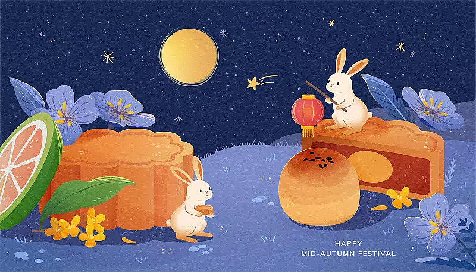

月下团圆：探寻中秋的文化之美

中秋，皎洁的月光下，亲情在家人的聚首中显得尤为温暖。这个古老的节日承载着丰富的文化内涵，仿佛是一本悠久的文化史书。在这个网页中，我们将漫游于月光之下，一同揭开中秋的神秘面纱，发现那些被岁月封存的传统习俗、美味佳肴以及深沉的文化底蕴。让我们探寻，体验，共同领略这个月夜中散发的独特魅力。
传统习俗：舞动在月光下的岁月印记
中秋之夜，人们沉醉于传统习俗的美妙舞台。赏月成为家庭的共同行动，月色下的家园充满了团聚的喜悦。此时，各地独具特色的传统习俗如灯谜猜猜、翩翩起舞的龙狮，将这个宁静的夜晚点缀得更加丰富多彩。月亮圆满，家人的心更是圆融，仿佛和古老的习俗一同舞动，留下岁月的深深印记。
食物文化：月饼的香甜传承
中秋之夜，香甜的月饼成为美好时光的代表。这圆满的糕点，传承着丰收和团圆的寓意，是中秋桌上不可或缺的珍品。不同口味的月饼，如莲蓉、红豆、五仁，述说着千家万户的独特故事。柚子的清新也在这个季节里飘散开来，象征着好运与幸福。在这个美食的季节，我们共同品味着家的味道，感受食物传承的温暖。
故事和传说：星空下的古老神话
在中秋的星空下，有一系列美丽而古老的传说。最为著名的是嫦娥奔月的故事，她是月亮上的仙女，守护着人间的团圆和爱情。每逢中秋夜，她在月光下微笑，成为了中秋的象征之一。
而在这个月宫中，还有一只勤劳的兔子，捣药为人间送去健康和幸福。它成为中秋月亮上的药师，象征着勤劳和智慧。
另一传说是吴刚与嫦娥的故事。吴刚在月宫遇到嫦娥，实现了他的愿望成为了月宫中的树神。然而，他却注视着嫦娥却无法和她相拥，表达了人们对于永远团聚的向往和渴望。
这些神话在星空中闪烁，如同明亮的星辰串联起中秋夜的美好，使这个传统的节日更加神秘而富有诗意。
食物文化：月饼的香甜传承
中秋之夜，香甜的月饼成为美好时光的代表。这圆满的糕点，传承着丰收和团圆的寓意，是中秋桌上不可或缺的珍品。不同口味的月饼，如莲蓉、红豆、五仁，述说着千家万户的独特故事。柚子的清新也在这个季节里飘散开来，象征着好运与幸福。在这个美食的季节，我们共同品味着家的味道，感受食物传承的温暖。